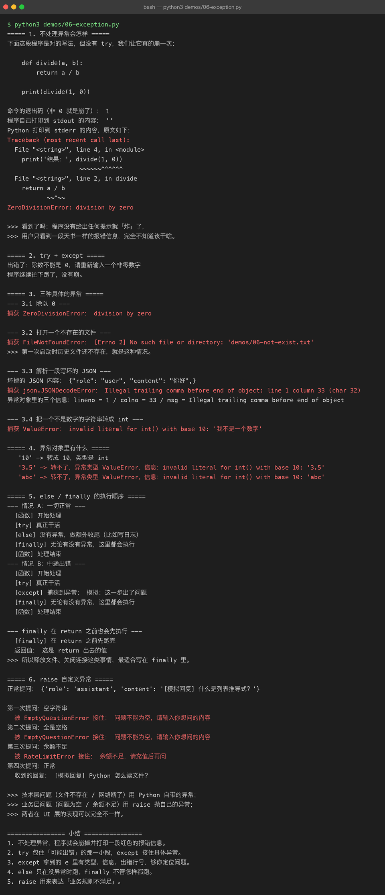
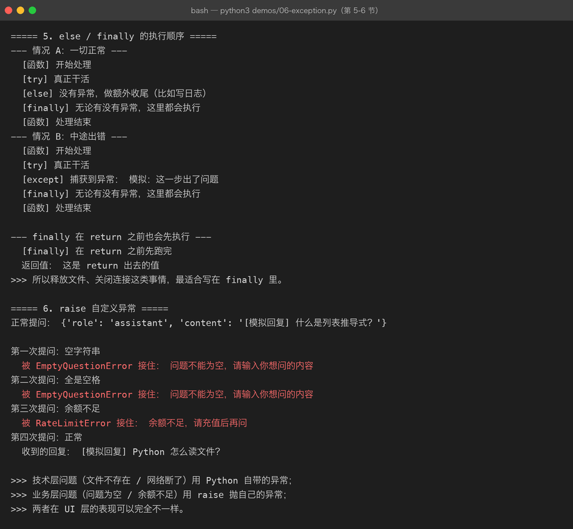

Lesson 06 — Exception：让 AI CLI Assistant 学会处理错误
AI Engineer Journey · Project 01 — Python AI CLI Assistant 学习方式：Project-Based Learning【项目驱动学习】 主线项目：Python AI CLI Assistant 本章目标：通过给已有项目制造真实错误，学习 Exception【异常】、try / except、else、finally、raise，并建立 AI 工程中的错误处理思维。
1. 这一章为什么存在？
我们的 AI CLI Assistant 到目前为止已经可以：
/hhelp
/history
/clear
/size
/last
/exit并且代码已经从：
一个 main.py逐步演进成：
ai_cli/
├── main.py
├── conversation.py
├── assistant.py
├── config.py
└── formatter.py看起来已经像一个 Python 项目了。
但是：
只要用户做一个意料之外的事情，程序可能直接崩溃。
例如：
请输入年龄：abc如果程序：
age = int(input("请输入年龄："))就可能直接报错。
真正的问题不是：
“Python 报错了。”
而是：
一个真实程序必须知道哪些错误可以处理，哪些错误不能让整个程序直接崩掉。
这就是：
Exception Handling【异常处理】
2. 先制造一个真实错误
先运行：
age = int(input("请输入年龄："))
print(f"你的年龄是：{age}")正常：
请输入年龄：29
你的年龄是：29但是输入：
请输入年龄：abc程序可能出现：
ValueError这说明：
"abc"不能被转换成整数。
3. 这就是 Exception
Exception【异常】可以先理解成：
程序运行过程中出现了一个非正常情况，导致当前操作无法正常完成。
例如：
用户输入错误
文件不存在
网络请求失败
API 返回异常
数据格式错误这些在 AI 项目中非常常见。
4. 不处理异常有什么问题？
假设你的 CLI Assistant：
启动
↓
等待用户输入
↓
用户输入错误
↓
程序崩溃那么用户只能：
重新启动程序这明显不是一个好的体验。
我们希望：
用户输入错误
↓
提示错误原因
↓
重新输入
↓
程序继续运行5. 第一个工具：try
Python 使用：
try:
...表示：
尝试执行这段可能出错的代码。
例如：
try:
age = int(input("请输入年龄："))但是：
仅仅
try还不够。
因为发生错误以后，我们还需要知道：
“出现异常之后怎么办？”
于是需要：
except
6. try + except
try:
age = int(input("请输入年龄："))
except:
print("输入错误，请输入数字。")现在：
正常：
请输入年龄：29程序继续。
错误：
请输入年龄：abc
输入错误，请输入数字。程序不会直接崩掉。


7. 这到底发生了什么？
程序：
try
↓
执行 int(input())
↓
成功？
├── 是 → 继续
│
└── 否 → Exception
↓
except
↓
执行错误处理所以：
try
↓
尝试执行
except
↓
发生异常时如何处理这是本章最核心的关系。
8. 项目第一次改造
上一阶段我们的 AI CLI Assistant 里面可能有：
user_input = input("You: ")现在我们加入一个命令：
/profile用户输入一些信息。
例如年龄：
def read_age():
age = int(input("请输入年龄："))
return age正常：
请输入年龄：29错误：
请输入年龄：abc如果不处理：
程序崩溃。
所以改成：
def read_age():
try:
age = int(input("请输入年龄："))
return age
except:
print("AI: 年龄必须是整数。")
return None现在：
You: /profile
请输入年龄：abc
AI: 年龄必须是整数。程序还能继续运行。
9. 为什么不建议直接裸 except
刚才我们写：
except:它虽然简单，但工程代码中通常不推荐这样做。
因为：
它可能把很多完全不同的问题全部吃掉。
例如：
try:
...
except:
print("出错了")你根本不知道：
到底出了什么错。
所以应该尽量捕获：
Specific Exception【特定异常】
10. ValueError
刚才：
int("abc")对应的典型异常就是：
ValueError可以写：
try:
age = int(input("请输入年龄："))
except ValueError:
print("请输入一个有效的整数。")现在逻辑更明确：
int 转换失败
↓
ValueError
↓
给用户友好提示11. 为什么叫 ValueError？
可以先拆开：
Value
+
Error意思就是：
提供的值不符合当前操作要求。
例如：
int("abc")"abc" 是一个值，但它不能转换成整数。
所以：
ValueError12. AI CLI Assistant 的真实场景
我们现在可以设计：
/profile让用户输入：
姓名
年龄
每日学习时间
当前学习方向例如：
You: /profile
姓名：Beiluo
年龄：abc程序不应该崩。
而应该：
AI: 年龄格式错误，请输入数字。然后回到 CLI。
13. 把错误处理封装成函数
在：
conversation.py或者更合适的：
profile.py中，我们可以写：
def read_integer(prompt):
try:
return int(input(prompt))
except ValueError:
print("输入错误，请输入整数。")
return None然后：
age = read_integer("请输入年龄：")这样调用方不需要知道：
try
except
ValueError具体怎么写。
这又回到了上一章：
Abstraction【抽象】
14. 现在出现一个很重要的工程思想
我们已经见过：
函数
模块
异常它们正在开始组合。
例如：
main.py
↓
read_integer()
↓
try
↓
int()
↓
ValueError也就是说：
异常处理应该尽量靠近“最了解这个错误”的代码。
比如：
def read_integer(prompt):
try:
return int(input(prompt))
except ValueError:
print("请输入整数。")
return None这个函数最清楚：
什么输入才算合法。
15. except 后面可以拿到异常对象
例如：
try:
age = int("abc")
except ValueError as error:
print(error)可能看到类似：
invalid literal for int() with base 10这里：
error就是：
当前发生的异常对象。
可以：
print(type(error))16. 为什么这个能力对 AI 很重要？
以后真正连接 LLM API 后：
Python
↓
HTTP
↓
LLM API可能出现：
网络失败
认证失败
限流
超时
服务异常
模型不存在
返回数据格式错误如果全部不处理：
用户
↓
请求 AI
↓
程序崩溃所以 AI 应用必须大量使用异常处理。
17. 模拟一个 LLM 调用异常
我们现在先不连接真实 API。
写一个模拟函数：
def generate_mock_response(user_input):
if user_input == "error":
raise RuntimeError("模拟 LLM 服务异常")
return f"我收到你的问题了：{user_input}"这里第一次遇到：
raise
18. raise 是什么？
raise：
主动抛出一个 Exception【异常】。
例如：
raise RuntimeError("模拟错误")意思：
我明确告诉 Python：这里发生了一个异常。
程序会中断当前正常流程，寻找能够处理它的 except。
19. 为什么我们需要主动 raise？
因为某些错误：
Python 不一定天然知道这是“业务错误”。
例如：
用户年龄不能小于 0Python 不会自动认为：
age = -10是程序异常。
但业务上我们认为：
年龄不能小于 0。
于是可以：
if age < 0:
raise ValueError("年龄不能小于 0")这就是：
Business Validation【业务校验】
20. 项目加入业务校验
例如：
def validate_age(age):
if age < 0:
raise ValueError("年龄不能小于 0")
return age调用：
try:
age = int(input("年龄："))
validate_age(age)
except ValueError as error:
print(f"AI: 输入错误：{error}")现在：
年龄：abc得到：
AI: 输入错误：请输入整数而：
年龄：-5得到：
AI: 输入错误：年龄不能小于 0这里已经有两个不同层次：
输入格式错误
+
业务规则错误21. 这两类错误要分开理解
第一类：技术层错误
例如：
int("abc")Python 本身就无法完成。
第二类：业务层错误
例如：
age = -5语法没有问题。
但是：
不符合我们的业务规则。
于是我们自己：
raise ValueError(...)22. else：没有异常时执行
Python 的异常结构还可以写：
try:
age = int(input("请输入年龄："))
except ValueError:
print("年龄输入错误")
else:
print(f"年龄是：{age}")逻辑：
try
↓
成功？
├── 否 → except
│
└── 是 → else23. 为什么需要 else？
例如：
try:
age = int(input("年龄："))
except ValueError:
print("输入错误")
else:
save_profile(age)这里语义非常清楚：
只有转换成功以后，才保存 Profile【档案】。
相比把所有代码都塞进：
try:
...更容易控制异常范围。
24. finally
还有一种情况：
不管有没有异常，我都要执行某些代码。
例如：
try:
print("执行操作")
except ValueError:
print("出现错误")
finally:
print("本次操作结束")输出可能是：
执行操作
本次操作结束或者异常时：
出现错误
本次操作结束finally：
无论是否出现异常，都执行。
25. AI 项目中的 finally
以后可能出现：
打开文件
↓
请求模型
↓
记录日志
↓
关闭资源或者：
开始一次请求
↓
记录开始时间
↓
调用模型
↓
成功 / 失败
↓
记录结束时间这些场景都可能用到：
finally当前先掌握概念即可。
26. 一个重要问题：try 不要包太大
不推荐：
try:
整个程序几十行代码
except:
print("出错了")因为这样你不知道：
到底哪一步出错。
更好的方式：
try:
age = int(input("年龄："))
except ValueError:
print("年龄格式错误")只保护真正可能抛出该异常的代码。
这叫：
Narrow Exception Boundary【窄异常边界】
简单理解：
try尽量只包住真正需要捕获的那一小段代码。
27. 现在给 CLI Assistant 加真实的错误处理
我们的：
assistant.py目前：
def generate_mock_response(user_input):
return f"我收到你的问题了：{user_input}"升级：
def generate_mock_response(user_input):
if user_input == "error":
raise RuntimeError("模拟 Assistant 服务异常")
return f"我收到你的问题了：{user_input}"28. main.py 捕获异常
主循环：
try:
answer = generate_mock_response(user_input)
except RuntimeError as error:
print(f"AI: Assistant 执行失败：{error}")
continue现在：
You: 你好
AI: 我收到你的问题了：你好但是：
You: error
AI: Assistant 执行失败：模拟 Assistant 服务异常程序没有崩。
然后：
You: 继续程序还能正常运行。
29. 这就是一个真正的 AI 应用体验
错误处理前：
用户
↓
AI
↓
异常
↓
程序崩溃错误处理后：
用户
↓
AI
↓
异常
↓
捕获
↓
友好提示
↓
继续运行这看起来只是 Python 基础。
实际上已经进入：
AI Application Engineering【AI 应用工程】
30. 错误应该保存进 messages 吗？
这时候会出现一个很有意思的工程问题。
例如：
You: 你好
AI: 正常回答保存：
user
assistant但如果：
You: error
AI: 服务调用失败需不需要把错误也记录进去？
可以设计：
{
"role": "system",
"content": "Assistant error: ..."
}或者：
{
"role": "error",
"content": "..."
}但注意：
真正的 LLM API messages 规范并不意味着你可以随意增加任意
role。
所以我们的内部程序数据结构可以记录错误，但发送给真实模型时需要遵守具体 API 的消息格式。
这个区别以后会非常重要。
31. 现在增加一个内部错误记录
更推荐在当前阶段简单处理：
error_message = {
"role": "assistant",
"content": f"抱歉，处理失败：{error}"
}然后：
messages.append(error_message)但是：
这是我们自己的 CLI 历史设计，不等于所有 LLM API 都支持这样的历史消息。
暂时不要把这个设计绝对化。
32. Exception 和 return None
之前我们有：
def read_age():
try:
return int(input("年龄："))
except ValueError:
return None另一种设计：
def read_age():
age = int(input("年龄："))
return age然后调用处：
try:
age = read_age()
except ValueError:
...两种方式都可以。
区别是：
方式 A
函数自己处理错误：
函数
↓
try / except
↓
返回 None方式 B
函数把异常交给调用方：
函数
↓
发生异常
↓
调用方处理33. 哪种更好？
没有绝对答案。
但工程上一个重要思维是：
谁最知道这个错误该怎么处理，就尽量由谁决定。
比如：
int("abc")这个函数知道：
转换失败。
但 CLI 知道：
应该如何告诉用户。
所以有时候：
低层
↓
抛出异常
高层
↓
决定如何展示会更合理。
这会是以后：
HTTP Client
↓
Service
↓
API异常设计的重要基础。
34. 自定义异常
现在假设：
AI CLI Assistant 有一个业务规则：消息不能为空。
我们可以：
def add_message(messages, role, content):
if not content.strip():
raise ValueError("消息不能为空")
messages.append(
{
"role": role,
"content": content
}
)这里：
content.strip()暂时先理解成：
去除文本首尾空白。
如果用户输入：
" "那么：
content.strip()得到：
""于是：
if not content.strip():成立。
然后：
raise ValueError("消息不能为空")35. 这就是输入校验
现在数据流：
用户输入
↓
add_message()
↓
校验
↓
是否合法？
├── 是 → 保存
└── 否 → raise这就是：
Validation【校验】
这是所有 Web API、AI API 都非常重要的能力。
36. 完整的消息添加函数
def add_message(messages, role, content):
if not content.strip():
raise ValueError("消息不能为空")
message = {
"role": role,
"content": content
}
messages.append(message)主程序：
try:
add_message(
messages,
"user",
user_input
)
except ValueError as error:
print(f"AI: 输入错误：{error}")
continue现在：
You:如果只输入空格：
AI: 输入错误：消息不能为空程序继续。
37. 这一次我们把异常处理放到了正确位置
现在架构：
main.py
│
│ 调用
↓
conversation.py
│
│ 数据校验失败
↓
raise ValueError
│
│ 返回
↓
main.py
│
↓
友好提示联系描述：
conversation.py负责判断消息是否满足自己的数据规则，因此它在发现空消息时抛出ValueError；main.py作为用户交互层，捕获这个异常并把技术错误转换成用户能够理解的提示。这样底层负责发现问题，上层负责决定如何向用户呈现问题。
这就是比较基础但非常重要的分层思想。
38. 最终 Project 01 v0.6
我们的项目现在变成：
01-python-ai-cli/
│
├── README.md
│
└── src/
└── ai_cli/
├── __init__.py
├── main.py
├── config.py
├── conversation.py
├── assistant.py
└── formatter.py能力：
v0.1
输入输出
v0.2
List / Dict / JSON / Messages
v0.3
Condition / Loop
v0.4
Function
v0.5
Module / Package
v0.6
Exception / Validation39. 一个简化版完整示例
conversation.py：
def add_message(messages, role, content):
if not content.strip():
raise ValueError("消息不能为空")
messages.append(
{
"role": role,
"content": content
}
)
def clear_history(messages):
messages.clear()
def get_message_count(messages):
return len(messages)
def show_history(messages):
print("\n========== Conversation ==========")
if not messages:
print("暂无消息。")
else:
for message in messages:
print(
f"{message['role']}: "
f"{message['content']}"
)
print("===================================")assistant.py：
def generate_mock_response(user_input):
if user_input == "error":
raise RuntimeError("模拟 Assistant 服务异常")
return f"我收到你的问题了：{user_input}"main.py：
from assistant import generate_mock_response
from conversation import (
add_message,
clear_history,
get_message_count,
show_history,
)
def main():
messages = []
print("AI Engineer CLI Assistant")
while True:
user_input = input("\nYou: ")
if user_input == "/exit":
print("AI: 再见！")
break
if user_input == "/history":
show_history(messages)
continue
if user_input == "/clear":
clear_history(messages)
print("AI: 聊天记录已清空。")
continue
if user_input == "/size":
print(
f"AI: 当前共有 "
f"{get_message_count(messages)} 条消息。"
)
continue
try:
add_message(
messages,
"user",
user_input
)
answer = generate_mock_response(
user_input
)
add_message(
messages,
"assistant",
answer
)
print(f"AI: {answer}")
except ValueError as error:
print(f"AI: 输入错误：{error}")
except RuntimeError as error:
print(f"AI: Assistant 执行失败：{error}")
if __name__ == "__main__":
main()注意：
这里故意没有把所有 Exception 都
except Exception，因为现在我们希望你理解不同异常对应不同处理逻辑。
40. 为什么 AI 工程特别重视异常？
以后真正调用模型：
Python
↓
HTTP Client
↓
LLM API可能遇到：
认证失败
↓
Authentication Error
请求超时
↓
Timeout
服务限流
↓
Rate Limit
服务器异常
↓
Server Error
JSON 解析失败
↓
JSON Error
模型不存在
↓
Model Error所以未来会出现：
Retry【重试】
Timeout【超时】
Fallback【降级 / 备用】
Circuit Breaker【熔断】
Logging【日志】
Monitoring【监控】但这些还不是今天的内容。
今天只需要掌握：
错误不能假装不存在。程序必须设计错误路径。
41. 本章知识地图
AI CLI Assistant
│
↓
用户输入
│
↓
Validation
│
┌─────────┴─────────┐
↓ ↓
成功 失败
│ │
↓ ↓
正常处理 raise Exception
│ │
↓ ↓
返回结果 except 捕获
│
↓
用户提示
│
↓
继续运行另外：
try
↓
尝试执行
except
↓
错误处理
else
↓
没有异常时执行
finally
↓
无论如何执行
raise
↓
主动抛出异常42. 本章最重要的区别
try
我准备执行一段可能出错的代码。
except
如果发生指定异常，我知道怎么处理。
else
如果没有发生异常，执行这里。
finally
无论结果如何，执行这里。
raise
我认为这里发生了一个异常，主动告诉 Python。
43. 主动回忆
不要看正文回答。
Q1
为什么：
int("abc")会触发 ValueError？
Q2
为什么不建议在真实项目里大量使用：
except:Q3
解释：
try:
...
except ValueError:
...的执行流程。
Q4
什么时候应该使用 raise？
结合我们的：
消息不能为空这个例子解释。
Q5
为什么：
try:
age = int(input("年龄："))
except ValueError:
...比：
try:
整个 main.py 几十行代码
except:
...更合理？
Q6
我们的 conversation.py 为什么可以 raise ValueError，而 main.py 负责把它转换成用户提示？
请结合模块职责回答。
Q7
如果：
def generate_mock_response(user_input):
raise RuntimeError("模型服务异常")那么：
try:
answer = generate_mock_response(user_input)
except RuntimeError:
...为什么程序不会直接崩溃？
44. 实战挑战
这次不要直接复制最终代码。
Challenge 1：安全整数输入
写：
def read_integer(prompt):
...要求：
用户输入 29
→ 返回 29
用户输入 abc
→ 提示错误
→ 不让程序崩溃Challenge 2：消息不能为空
修改：
add_message()要求：
输入：
""
或者：
" "都抛出：
ValueError提示：
消息不能为空Challenge 3：模拟 LLM 故障
修改：
generate_mock_response()让：
输入：
error主动：
raise RuntimeError(...)然后在 main.py 中捕获。
45. Challenge 4：同时处理两种错误
要求：
用户输入空消息
→ ValueError
Assistant 模拟故障
→ RuntimeError分别输出：
输入错误：
Assistant 执行失败：而不是全部显示：
发生错误46. 本章完成标准
Level 1
知道 Exception 是什么。
Level 2
会使用：
try
exceptLevel 3
知道：
ValueError
RuntimeError分别可以代表什么问题。
Level 4
会使用：
raise主动表达业务错误。
Level 5
能让 AI CLI Assistant：
出现输入错误后继续运行，而不是直接崩溃。
Level 6
能够把：
底层异常转换成：
用户可理解的错误信息Level 7
理解：
异常处理不是“把错误藏起来”，而是让程序明确知道错误发生在哪里、应该由谁处理、处理之后程序应该怎么继续。
47. Project 01 最新进度
Project 01 — Python AI CLI Assistant
v0.1 输入 / 输出 ✅
v0.2 List / Dict / JSON ✅
v0.3 Condition / Loop ✅
v0.4 Function ✅
v0.5 Module / Package ✅
v0.6 Exception / Validation 🔄
v0.7 File / JSON Persistence ⬜
v0.8 venv / pip / Environment ⬜
v0.9 HTTP / API ⬜
v1.0 Real LLM CLI Assistant ⬜48. 下一章为什么学习 File / JSON？
现在我们已经可以：
保存消息到内存但程序关闭：
messages
↓
消失这显然不行。
于是下一章需求自然出现：
我要让 AI CLI Assistant 重启以后还能找回历史聊天。
于是进入：
Lesson 07 — File / JSON：让 AI CLI Assistant 记住历史
我们会继续这个项目：
messages
↓
json.dump()
↓
messages.json
↓
程序关闭
再次启动
↓
messages.json
↓
json.load()
↓
恢复历史然后你会第一次真正理解：
Memory【内存中的数据】
VS
Persistence【持久化】并且继续把：
文件
JSON
异常处理
函数
模块组合在一起。
49. 本章一句话总结
Exception Handling【异常处理】不是为了让程序“看起来不报错”，而是让程序能够识别异常、区分异常、在合适的位置处理异常，并在发生问题后以可控的方式继续运行。对于 AI CLI Assistant 来说，这一步是从“能运行的脚本”走向“可靠应用”的重要一步。